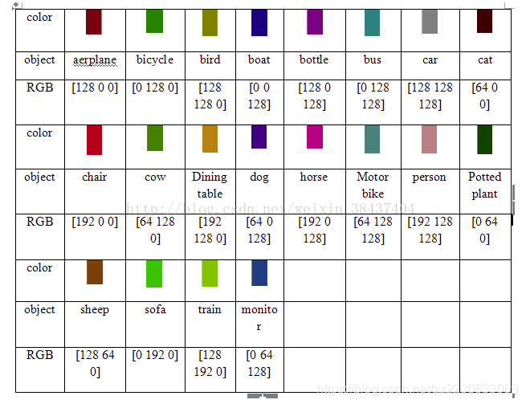

Pascal VOC数据集
Pascal VOC数据集
这个数据集是目标检测、语义分割任务中常见的数据集
如果训练时需要使用该数据集，可以直接使用网上的开源代码，==有人已经写了把该数据集转成Pytorch的Dataset类的代码。==
1.语言分割任务的使用
1.1数据集结构
JPEGImage文件夹（包含了分割所要用的原图片）
SegmentationClass文件夹（里面包含了分割所要用的标签图）
原始的VOC数据集中，所使用的标签图片是3通道的RGB伪彩图，每种类别的三个通道的数值是确定的，在训练时，需要使用一个colormap将这个3通道的图转成灰度图从而训练。
ImageSets文件夹下的Segmentation文件夹（里面以txt的形式包含了哪些图片用于训练/验证）
ImageSets/Segmentation/train.txt：总共有1464行也就是1464张训练图片的名字
ImageSets/Segmentation/val.txt：总共有1449行也就是1449张验证图片的名字
ImageSets/Segmentation/trainval.txt：总共有2913行也就是2913张训练验证图片，上面两个的并集
1.2注意事项
JPEGImage文件夹：包含了所有的原图片总共17125张且shape=h x w x 3，mode=RGB，format=JPEG，大小不一致
SegmentationClass文件夹：包含了语义分割的所有标签图2913张且shape=h x w ，mode=P，format=PNG，大小不一致(这里需要注意，mask图直接读成numpy是h x w x 3大小的彩色图，还需要根据colormap映射回类别，而先用Image.open读进来再转成numpy是h x w大小的，值就是类别值，使用的时候推荐这种读取方法，比较方便。)
All articles on this blog are licensed under CC BY-NC-SA 4.0 unless otherwise stated.